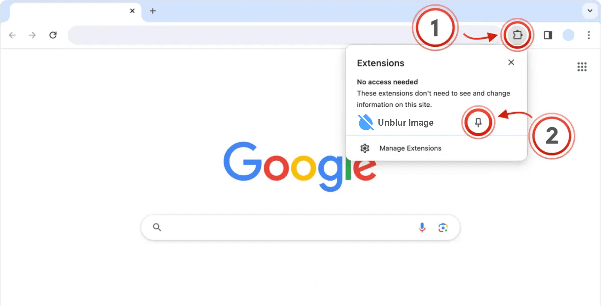
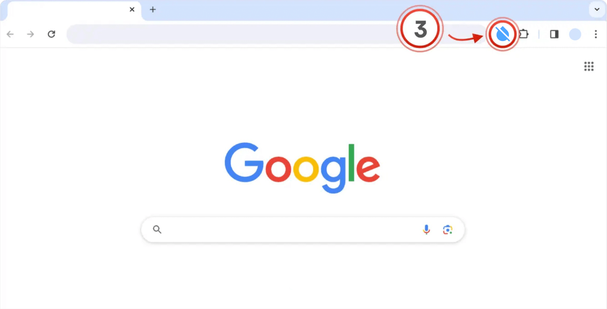

Unblur Image is installed
Click the puzzle piece (1) in the top right of your browser.
Click the little pin (2) next to the extension:

Simply click on the extension icon (3) to open Unblur Image:
